整个六月份约6k 于2022-06-30 12:50
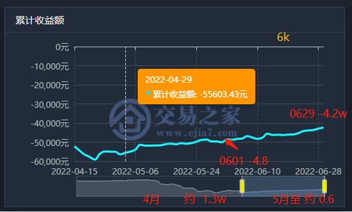
2022六月份主要涉及到的品种有，过滤条件 >=100 的：
螺纹rb2210 : 340
pp2209 : 545 + 315 + 550 + 175 = 1585
玻璃fg2209 : 300 + 860 + 360 = 1520
纯碱sa2209 : 420
菜粕rm2209 : 360
豆粕m2209 : 490 + 720 + 170 + 430 = 1810
合计：340 + 1585 + 1520 + 420 + 360 + 1810 ≈ 6035
六月主要交易品种为：pp2209、玻璃FG2209、豆粕m2209
聚丙烯pp2209
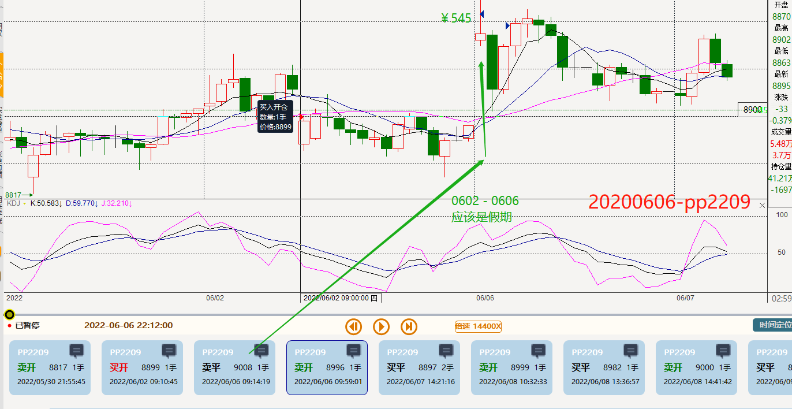
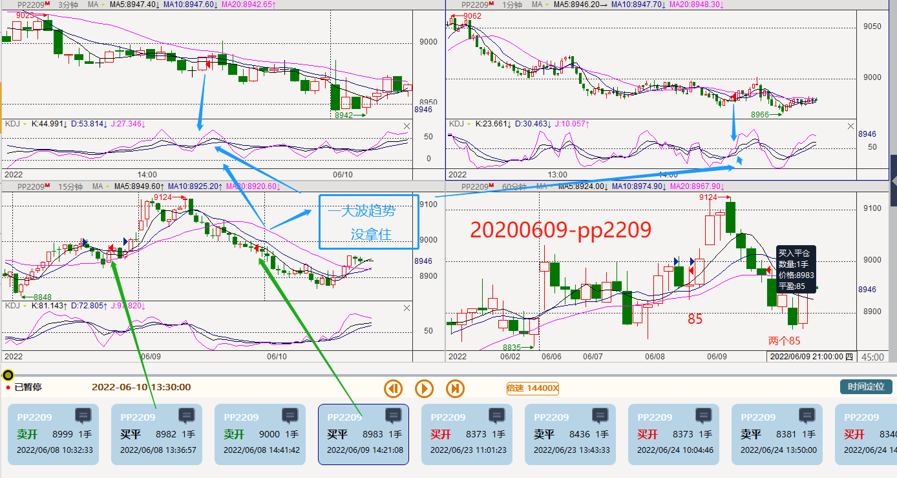
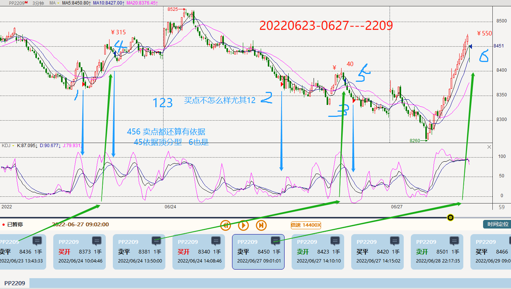
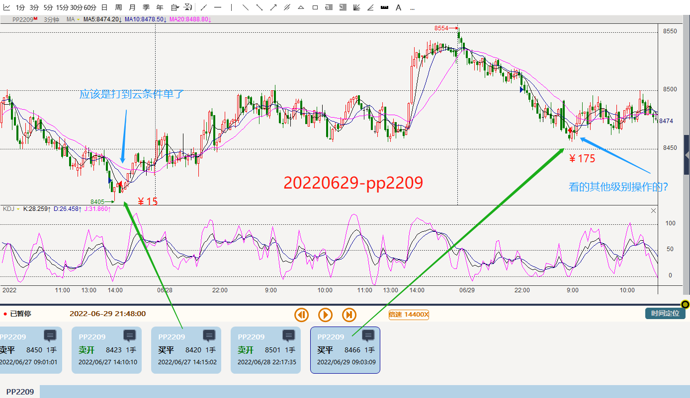
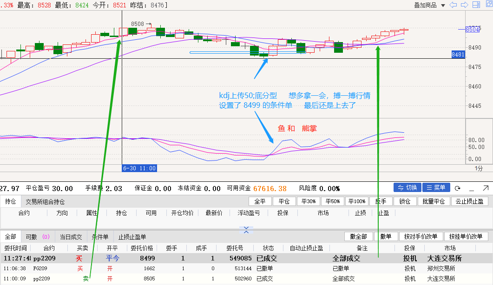
玻璃FG2209 至2022-06-30
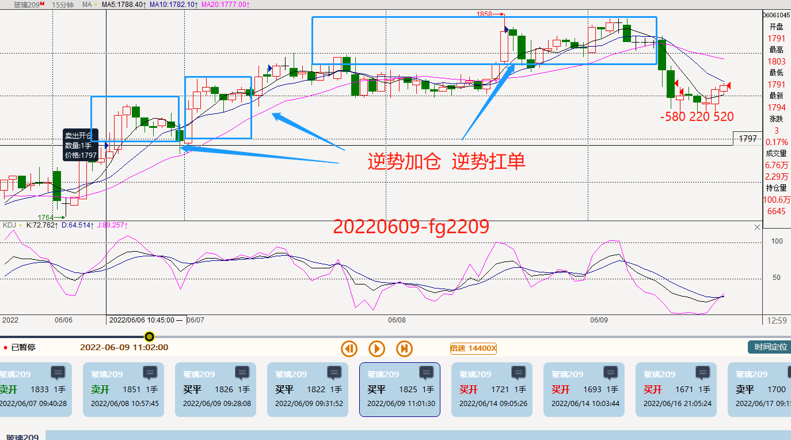
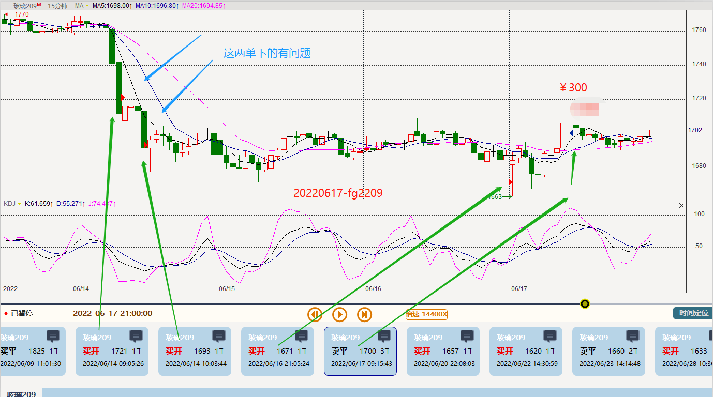
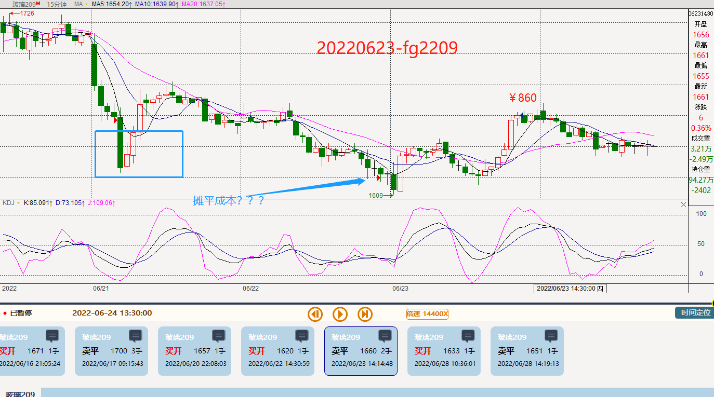
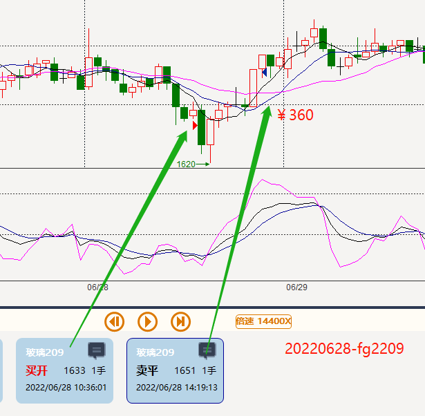
豆粕m2209
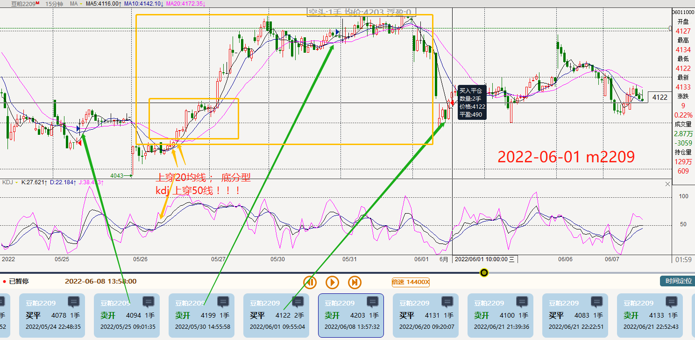
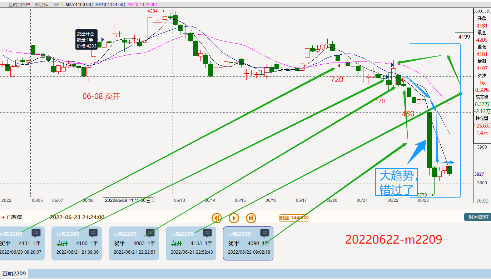
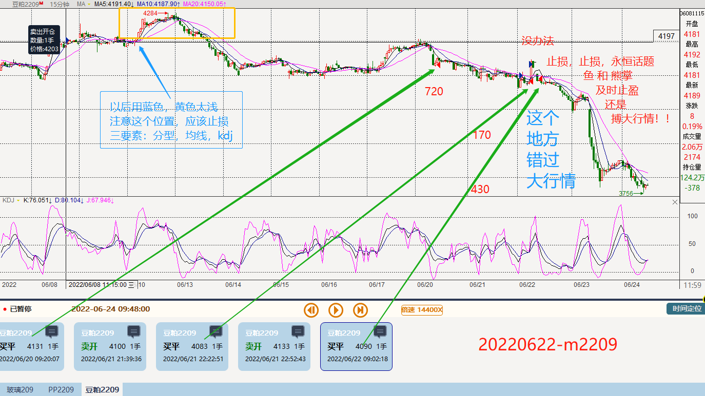
其他少量交易品种有：螺纹rb2210、 纯碱sa2209、 菜粕rm2209
螺纹rb2210:
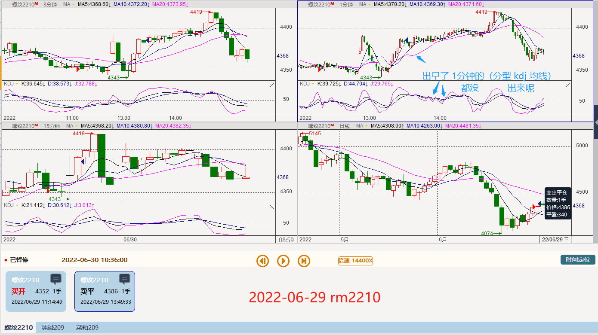
纯碱sa2209:
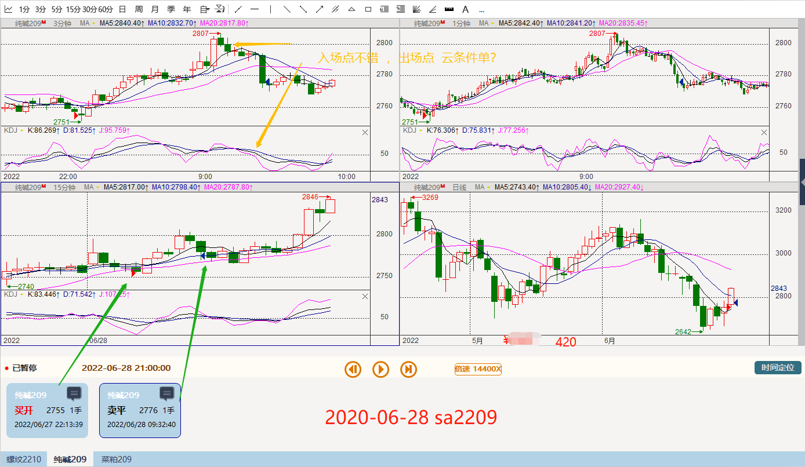
菜粕rm2209:
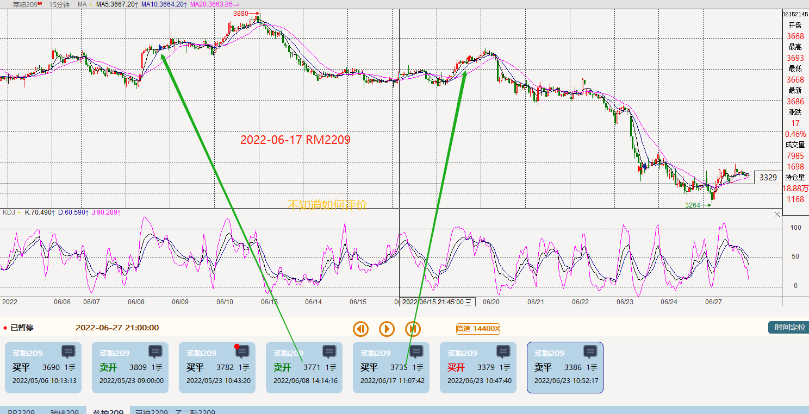